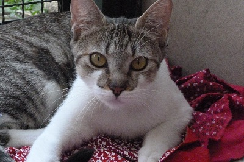

CÃES:
Melorie é uma cadela muito dócio que gosta muito de brincar solta, sempre muito atenciosa e depelos macios. Está sendo muito bem cuidada e só necessita de uma nova família.
Mike é um cão muito levado que não pára quieto, esse gosta de correr e de beber muita água depois :D
Flutus é um cão muito curioso, calmo e protetor, só vive latindo para estranhos mas só para proterger quem cuida dele. rsrs
Aparecida só gosta de sofá, mas garanto que ela sabe onde fazer suas necessidades. :)
GATOS:
Thor é um gato super carinhoso que se aproxíma de todos se alisando nas pernas. :D

Pedro não gosta de muita brincadeira não, gosta de ficar no canto dele kkk :D
Nica só fica olhando e não pede nada mas balance a ração que ela corre. :D
Cassildes gosta de assistir televisão o dia todo :D